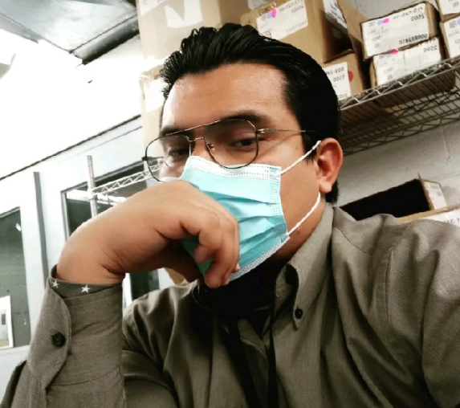

Curriculum vitae

- Name: Javier Lucio Rivas Robles
- Birth Date: January 9, 1995
- Phone: 656-356-6666
- E-mail: lucior620@gmail.com
Automation Engineer.
Currently my functions are work with the manufacturing operations projects
and production
teams to choose, assess and implement technology and equipment related to the automation,
control and robots of our processes. Work with Operations to resolve complex technical
problems that boost reliability and optimize performance of automated systems.
With more than 6 years in the industry in different departments focused on problem solving,
design of workstations, improvements in security problems, compliance with maintenance
programs, project monitoring.
Professional objective.
Plan and ensure the good management of the organization's resources to achieve the
established objectives. This work has a decisive role in decision-making, in product monitoring,
based on rigorous process control, considering manufacturing quality, providing designs for
assembly through the ability to solve problems. I consider myself a reliable, responsible person
with enough initiative and with the knowledge to reach the required objectives.
Labor Experience
- Company name: Inventec
- Job Position: Automation Engineer.
- April 2022 - Currently
Activities
- Responsible to introduce new software/hardware for production lines.
- Develop and implement new technologies
- Technological poke-yoke implementations
- Identify and report any quality and compliance issues and support corrective actions.
- Identify improvements in the processes.
- Prepares cost estimates; compiles required cost and equipment information, and writes
and reviews appropriation requests.
- Plan, implement and supervise the development and execution of all daily activities and
processes.
- Investigates problems and requirements of projects, and develops plans for solutions in
line with economic, personnel, and environmental considerations.
- Root cause analysis/problem-solving.
- Test program operation to verify it remains functional.
- Front-end developer.
- Company name: Avicos Automation
- Job Position: Automation Engineer.
- February 2020 - May 2022
Activities
- Review or approve designs, calculations, or cost estimates, evaluate designs or
specifications.
- Integrate robotics with peripherals, controllers or other equipment, Design
electromechanical systems.
- Responsible to introduce new software/hardware for production lines.
- Design and implement poke-yoke.
- Develops and designs control systems.
- Document automation projects.
- Mechanical/electrical equipment and software installation.
- Ability to determine customer needs to develop project specifications and scope.
- Ability to interpret and implement specification
Skills
- Solid works (basic)
- Laser Marker
- Failure analysis.
- Personnel management.
- English 70%
- Multitask.
- Leadership.